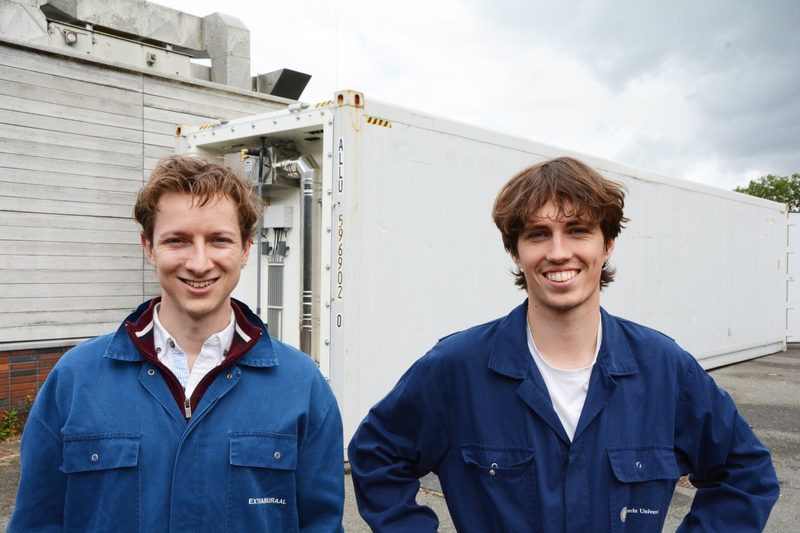
Warmte en compost winnen in één systeem
Trade journal V-focus on our automated system in an insulated shipping container, and what it delivers for businesses with a continuous heat demand. In Dutch.
Read the article
Trade journal V-focus on our automated system in an insulated shipping container, and what it delivers for businesses with a continuous heat demand. In Dutch.
Read the article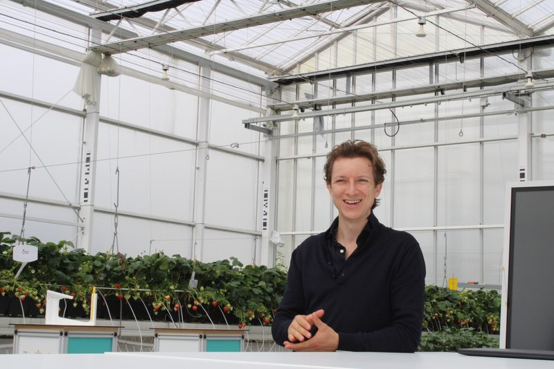
A report from the Hightech Horti Innovation Tour at the HIC Venture Studio in Bleiswijk, where Nathan presented the system.
Read the article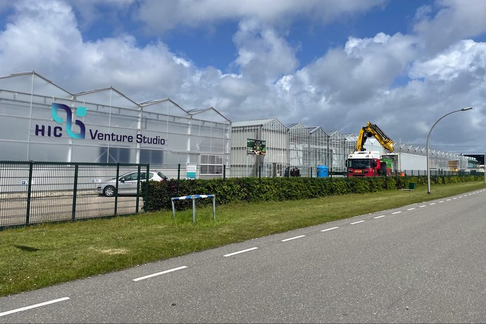
The Dutch version of the same story. Plant waste from the greenhouse as a heat source, explained at the HIC Venture Studio in Bleiswijk. In Dutch.
Read the article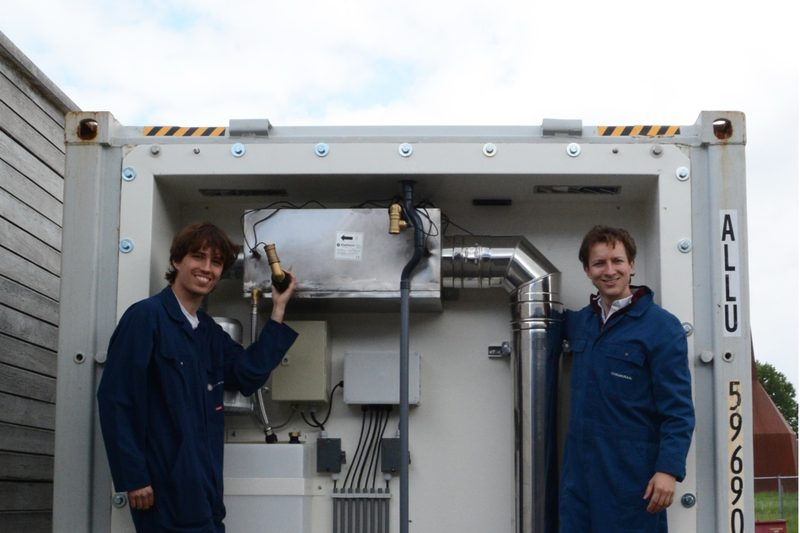
The university looks back on the road from a student project at De Tolakker to a company of its own. In Dutch.
Read the article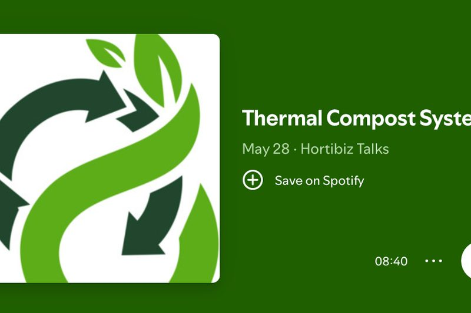
Listen back to a conversation about compost heat in the greenhouse. In Dutch.
Read the article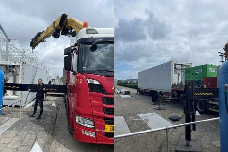
On the start of the validation at the HortiScience Innovation Center, where the container is connected to the heating of the demonstration greenhouse. In Dutch.
Read the article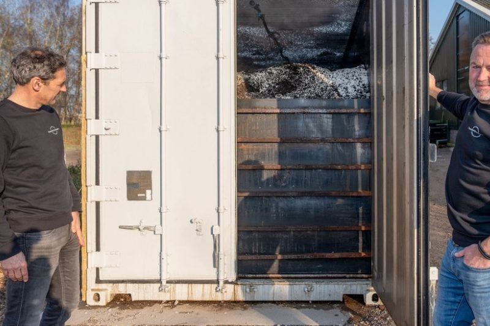
The local paper at De Boerinn in Kamerik. Manure and pruning waste deliver the heat for the buildings, and the compost goes to the organic pick-your-own garden. In Dutch.
Read the article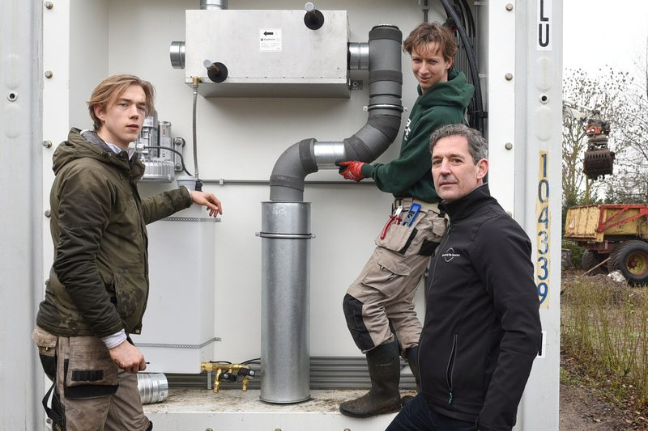
National daily AD visited the Woerden area and pressed us on the smell, or the lack of it. In Dutch.
Read the article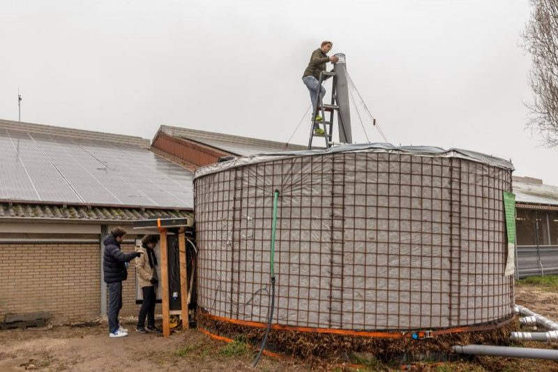
Farming weekly Nieuwe Oogst on the research into compost heaters that turn manure and green waste into compost and heat. In Dutch.
Read the article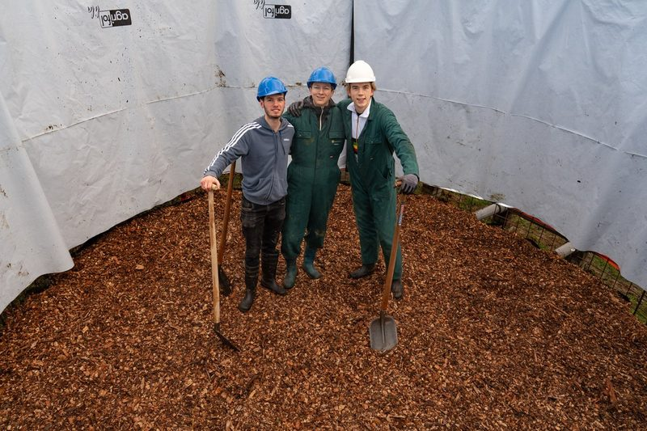
The university on the test setup at the teaching farm of its veterinary faculty. In Dutch.
Read the article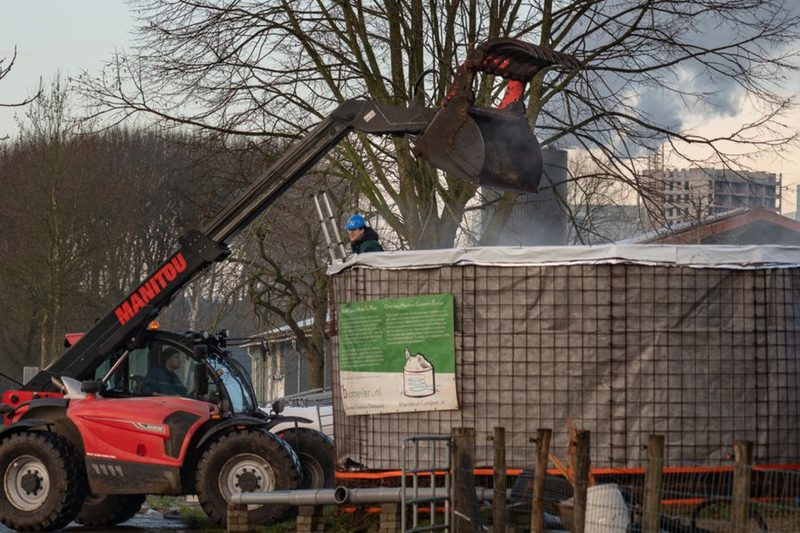
RTV Utrecht filmed at the De Tolakker setup, showing how wood chips and manure come to deliver heat. In Dutch.
Read the article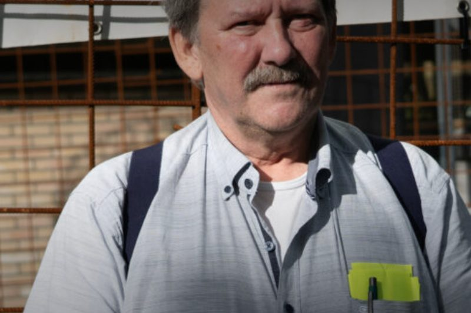
The veterinary professional association on the experiment at the faculty farm. In Dutch.
Read the articleWe are glad to think along with you about your heat demand and the residual streams you have. No obligation.
Book a call